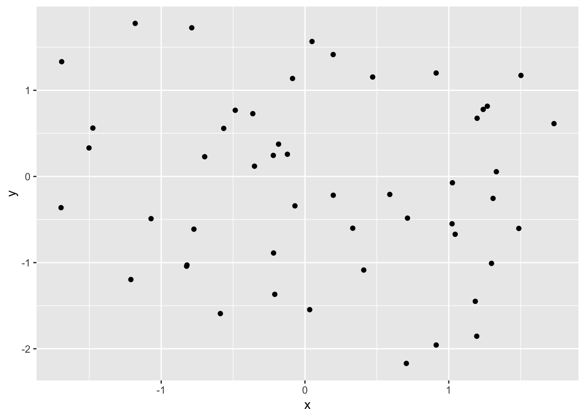
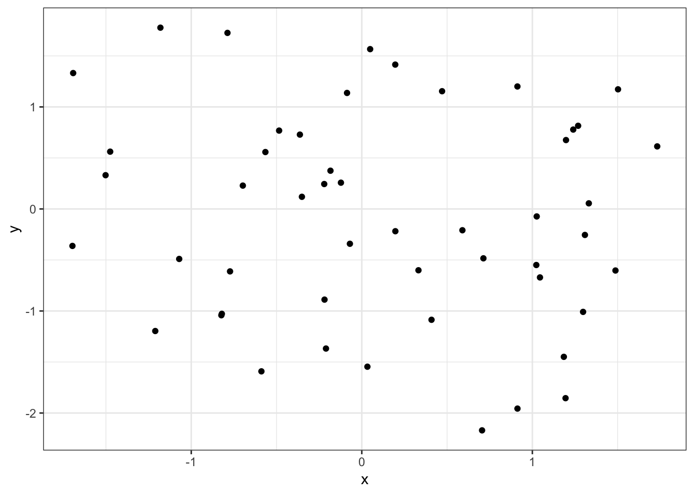
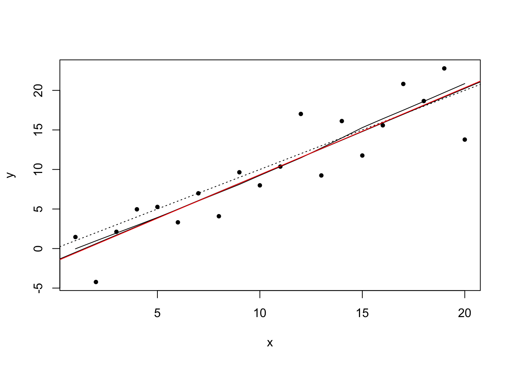

Chapter 3 R Programming
3.1 What is R?
The R statistical programming language is a free, open source package based on the S language developed by John Chambers.
3.1.1 Some history of R and S
S was further developed into R by Robert Gentlemen (Canada) and Ross Ihaka (New Zealand)

Figure 3.1: R Inventors
3.1.2 It is:
- Large, probably one of the largest based on the user-written add-ons/procedures
- Object-oriented
- Interactive
- Multiplatform: Windows, Mac, Linux
According to John Chambers (2009), six facets of R:
- an interface to computational procedures of many kinds;
- interactive, hands-on in real time;
- functional in its model of programming;
- object-oriented, “everything is an object”;
- modular, built from standardized pieces; and,
- collaborative, a world-wide, open-source effort.

Figure 3.2: Prominent R Developers
3.2 Why R?
- A programming platform environment
- Allow development of software/packages by users
- Currently, the CRAN package repository features over 14,000 available packages (as of May, 2019).
- Graphics!!!
- Scaleble and Portable
- Interface with other platform/langauges (e.g. C++, Python, JavaScript, Stan, SQL)
- Comparing R with other software?

Figure 3.3: R Compared with other statistical programs/platforms
Source: Oscar Torres-Reyna. 2010. Getting Started in R~Stata Notes on Exploring Data
3.3 RStudio
RStudio is a user interface for the statistical programming software R.
- Object-based environment
- Window system
- Point and click operations
- Coding recommended
- Expansions and development
- a multi-functional Integrated Development Environment (IDE)
Figure 3.4: RStudio screenshot
3.4 Basic operations and object assignment
Arithmetic Operations:
+, -, *, /, ^ are the standard arithmetic operators.
Assignment
To assign a value to a variable use “<-” or “=”:
## Introduction to R sample program
## file: introR02.R
## Adapted from Venables, W.N., Smith, D.M. and Team, R.C., 2018. An Introduction to R, Version 3.5.1 (2018-07-02)
# Clear any existing objects
rm(list = ls())
# Generate x, y and w to demonstrate linear models and plots.
# Make x = (1,2,...,20).
x <- 1:20
# Create A ‘weight’ vector of standard deviations.
w <- 1 + sqrt(x)/2
# Create a data frame of two columns, x and y.
dummy <- data.frame(x=x, y= x + rnorm(x)*w)
# Fit a simple linear regression
# With y to the left of the tilde then x, meaning y being dependent on x.
# Unlike other statistical packages, R does not display all output. It is recommended
# to create an object to store the estimates.
fm <- lm(y ~ x, data=dummy)
# Display the summary of the output of model fm.
summary(fm)##
## Call:
## lm(formula = y ~ x, data = dummy)
##
## Residuals:
## Min 1Q Median 3Q Max
## -5.0958 -2.3579 -0.1242 1.4008 5.4649
##
## Coefficients:
## Estimate Std. Error t value Pr(>|t|)
## (Intercept) 0.2272 1.2520 0.181 0.858
## x 0.7660 0.1045 7.329 8.34e-07 ***
## ---
## Signif. codes: 0 '***' 0.001 '**' 0.01 '*' 0.05 '.' 0.1 ' ' 1
##
## Residual standard error: 2.695 on 18 degrees of freedom
## Multiple R-squared: 0.749, Adjusted R-squared: 0.7351
## F-statistic: 53.71 on 1 and 18 DF, p-value: 8.337e-07# Use w for a weighted regression.
fm1 <- lm(y ~ x, data=dummy, weight=1/w^2)
# Display the summary of the output of model fm1.
summary(fm1)##
## Call:
## lm(formula = y ~ x, data = dummy, weights = 1/w^2)
##
## Weighted Residuals:
## Min 1Q Median 3Q Max
## -1.78814 -0.81695 -0.05702 0.68900 2.27589
##
## Coefficients:
## Estimate Std. Error t value Pr(>|t|)
## (Intercept) 0.10794 0.96591 0.112 0.912
## x 0.77720 0.09849 7.891 2.98e-07 ***
## ---
## Signif. codes: 0 '***' 0.001 '**' 0.01 '*' 0.05 '.' 0.1 ' ' 1
##
## Residual standard error: 1.067 on 18 degrees of freedom
## Multiple R-squared: 0.7758, Adjusted R-squared: 0.7633
## F-statistic: 62.27 on 1 and 18 DF, p-value: 2.977e-07# Make the columns in the data frame visible as variables.
attach(dummy)
# Make a nonparametric local regression function.
lrf <- lowess(x, y)
# Standard point plot, with plotting character (pch) as bullet.
plot(x, y,pch=20)
# Add in the local regression.
lines(x, lrf$y)
# The true regression line: (intercept 0, slope 1, with dotted line type )
abline(0, 1, lty=3)
# Unweighted regression line.
abline(coef(fm))
# Weighted regression line.
abline(coef(fm1), col = "red")
# A standard regression diagnostic plot to check for heteroscedasticity. Can you see it?
plot(fitted(fm), pch=20, resid(fm), xlab="Fitted values", ylab="Residuals", main="Residuals vs Fitted")
# How about now?
abline(0,0, col="red") 
# A normal scores plot to check for skewness, kurtosis and outliers.
qqnorm(resid(fm), main="Residuals Rankit Plot", pch=17)
# Cleaning up
rm(list = ls())3.5 Illustration
In this section, we demonstrate exploring data about Taiwan elections in 2016. The Taiwan Election and Democratization Study (TEDS) is one of the longest and most comprehensive elections studies starting in 2001. TEDS collects data through different modes of surveys including face-to-face interviews, telephone interviews and internet surveys. More detail of TEDS can be found at the National Chengchi University Election Study Center website at http://teds.nccu.edu.tw/main.php.
Taiwan Election and Democratization Study 2016 data
# Import the TEDS 2016 data in Stata format using the haven package
## install.packages("haven")
library(haven)
TEDS_2016 <- read_stata("https://github.com/datageneration/home/blob/master/DataProgramming/data/TEDS_2016.dta?raw=true")
# Prepare the analyze the Party ID variable
# Assign label to the values (1=KMT, 2=DPP, 3=NP, 4=PFP, 5=TSU, 6=NPP, 7="NA")
TEDS_2016$PartyID <- factor(TEDS_2016$PartyID, labels=c("KMT","DPP","NP","PFP", "TSU", "NPP","NA"))Take a look at the variable:
# Check the variable
attach(TEDS_2016)
head(PartyID)## [1] NA NA KMT NA NA DPP
## Levels: KMT DPP NP PFP TSU NPP NAtail(PartyID)## [1] NA NA DPP NA NA NA
## Levels: KMT DPP NP PFP TSU NPP NAFrequency table:
# Run a frequency table of the Party ID variable using the descr package
## install.packages("descr")
library(descr)
freq(TEDS_2016$PartyID)
## TEDS_2016$PartyID
## Frequency Percent
## KMT 388 22.9586
## DPP 591 34.9704
## NP 3 0.1775
## PFP 32 1.8935
## TSU 5 0.2959
## NPP 43 2.5444
## NA 628 37.1598
## Total 1690 100.0000Get a better chart of the Party ID variable:
# Plot the Party ID variable
library(ggplot2)
ggplot(TEDS_2016, aes(PartyID)) +
geom_bar()
We can attend to more detail of the chart, such as adding labels to x and y axes, and calculating the percentage instead of counts.
ggplot(TEDS_2016, aes(PartyID)) +
geom_bar(aes(y = (..count..)/sum(..count..))) +
scale_y_continuous(labels=scales::percent) +
ylab("Party Support (%)") +
xlab("Taiwan Political Parties")
Adding colors, with another theme:
ggplot(TEDS_2016, aes(PartyID)) +
geom_bar(aes(y = (..count..)/sum(..count..),fill=PartyID)) +
scale_y_continuous(labels=scales::percent) +
ylab("Party Support (%)") +
xlab("Taiwan Political Parties") +
theme_bw()Hold on, colors are not right!
ggplot(TEDS_2016, aes(PartyID)) +
geom_bar(aes(y = (..count..)/sum(..count..),fill=PartyID)) +
scale_y_continuous(labels=scales::percent) +
ylab("Party Support (%)") +
xlab("Taiwan Political Parties") +
theme_bw() +
scale_fill_manual(values=c("steel blue","forestgreen","khaki1","orange","goldenrod","yellow","grey"))To make the chart more meaningful, we can use a package called tidyverse to manage the data.
##install.packages("tidyverse")
library(tidyverse)
TEDS_2016 %>%
count(PartyID) %>%
mutate(perc = n / nrow(TEDS_2016)) -> T2
ggplot(T2, aes(x = reorder(PartyID, -perc),y = perc,fill=PartyID)) +
geom_bar(stat = "identity") +
ylab("Party Support (%)") +
xlab("Taiwan Political Parties") +
theme_bw() +
scale_fill_manual(values=c("steel blue","forestgreen","khaki1","orange","goldenrod","yellow","grey"))
3.6 Exercise
Analyze the Tondu (統獨）variable using the following procedures:
- Assign label to each category
- Run a frequency table using descr
- Plot the variable using ggplot2
Hint:
- Prepare the analyze the Tondu variable using these labesl: (“Unification now,”“Status quo, unif. in future,”“Status quo, decide later,”“Status quo forever,” “Status quo, indep. in future,” “Independence now,”“No response”)
- Sample codes:
TEDS_2016$Tondu<-factor(TEDS_2016$Tondu,labels=c("Unification now","Status quo, unif. in >future","Status quo, decide later","Status quo forever", >"Status quo, indep. in future", "Independence now","No >response"))